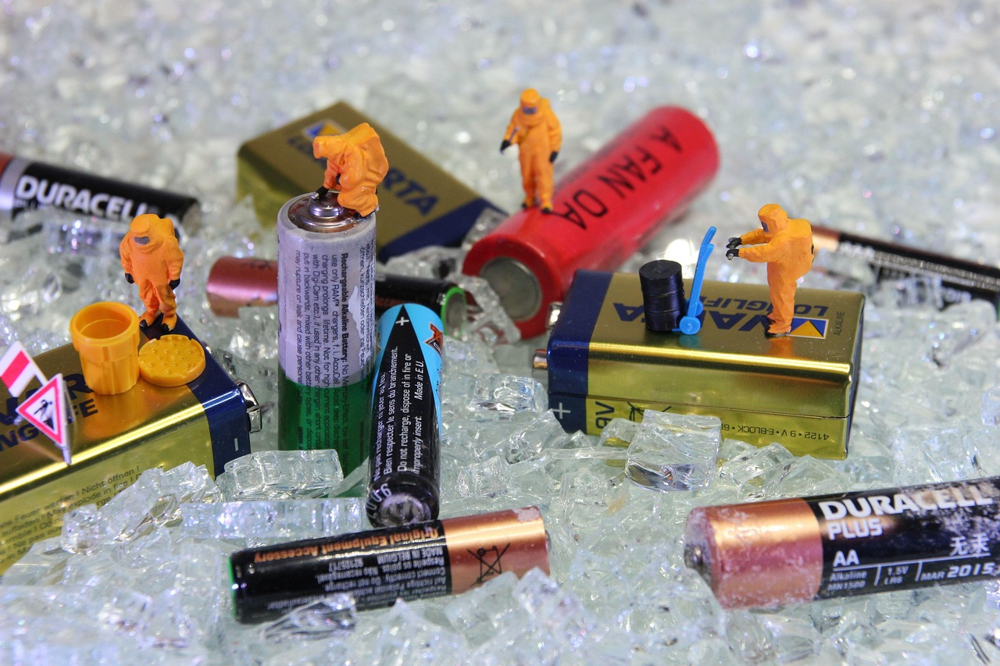
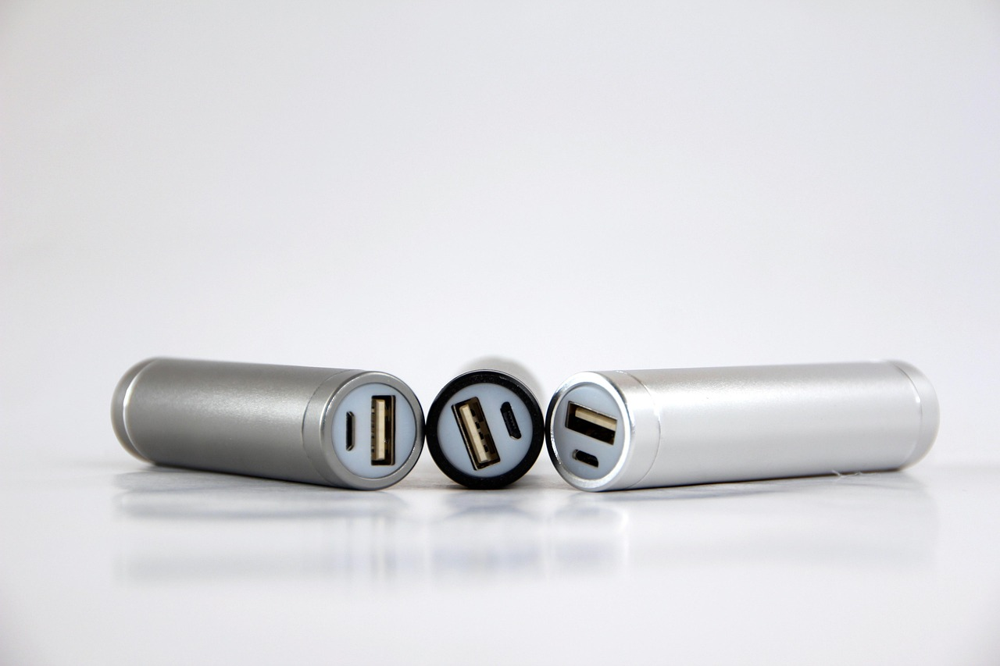

-

- 
识痕
锂电池缺陷检测系统 上传或实时获取的图像将由深度学习模型处理缺陷所在的位置通过清晰的标注框直观呈现
高效的数据标注与标准化
通过基于全卷积自编码器和软聚类算法的自动标注方法，项目大幅提高了缺陷标注的效率和一致性，帮助专家快速制定标准化标注体系，从而为后续的模型训练提供高质量的数据支持。
自监督学习提升检测能力
结合自监督学习方法（如CutPaste和SimCLR），项目通过定制预训练权重，优化了模型对微小缺陷和复杂背景的识别能力，尤其在小样本和小目标缺陷的检测场景下表现突出，提升了模型的泛化能力和鲁棒性。
多方面的模型优化与改进
通过改进YOLOv8模型，项目解决了小目标、极端长宽比和小样本问题，增强了模型对锂电池表面缺陷的检测精度和鲁棒性。引入FPN注意模块、非对称卷积等创新技术，有效提升了在复杂工业场景中的检测性能。
提高缺陷检测 精确度
尽管缺陷检测方法有多种变化，但大多数都面临着标注标准难以确立和迁移学习难以适应具体工业场景的挑战。我们提出的解决方案，结合了 FineDefect 数据集和自监督预训练，显著提升了缺陷检测的性能。
我们做什么

表面缺陷检测
通过使用 FineDefect 数据集，我们提供锂电池表面缺陷的自动检测，包括划痕、裂纹等异常。
数据标准化与聚类
我们通过全卷积自编码器和软聚类算法，辅助建立标准化缺陷标注体系，提升检测效率和一致性。
模型性能改进
我们对 YOLOv8 模型进行了改进，解决了小目标、小样本和极端长宽比缺陷检测中的问题，提升了检测精度和召回率。